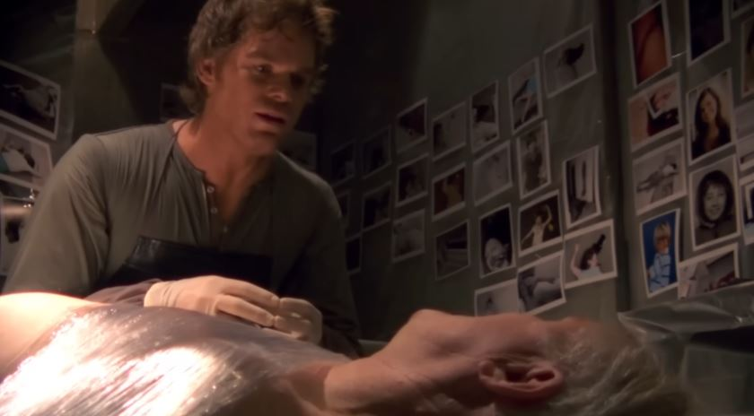

He's smart. He's lovable. He's Dexter Morgan, America's favorite serial killer, who spends his days solving crimes and his nights committing them. - imdb
MEET THE CAST
Dexter Morgan
A blood spatter analyst for the Miami Metro Police... and a serial killer.
Debra Morgan
Dexter’s foul-mouthed sister and a tough detective in Miami.
Harrison Morgan
Dexter’s son who’s figuring out his own dark path.
Harry Morgan
Dexter's adoptive father, a police officer who taught him the code.

Angel Batista
A kind-hearted detective and one of Dexter’s closest colleagues.
Vince Masuka
The quirky and inappropriately funny forensic scientist.
Maria LaGuerta
A politically-driven lieutenant with a long history in the department.
Brian Moser
Dexter’s long-lost brother and the infamous Ice Truck Killer.

James Doakes
The intense sergeant who always suspected Dexter of something dark.
Lila West
Dexter’s manipulative and dangerous ex-girlfriend.
Rita Morgan
Dexter’s gentle wife who brought light to his dark life.
Miguel Prado
A district attorney who briefly became Dexter’s killing partner.
The Skinner
A serial killer known for torturing and flaying victims alive.
Freebo
A small-time drug dealer who sparks a chain of violent events.
Arthur Mitchell
The Trinity Killer — Dexter's most dangerous and complex adversary.
Jordan Chase
A charismatic self-help guru with a dark secret and cult-like followers.
Ray Speltzer
A sadistic killer who creates twisted mazes for his victims.

Travis Marshall
A doomsday killer controlled by his inner demons and mentor.
Isaak Sirko
A ruthless Ukrainian mobster with a surprisingly emotional motive.
Evelyn Vogel
A brilliant neuropsychiatrist who helped shape Dexter’s code.
Oliver Saxon
Vogel’s secret son and Dexter’s final major nemesis.